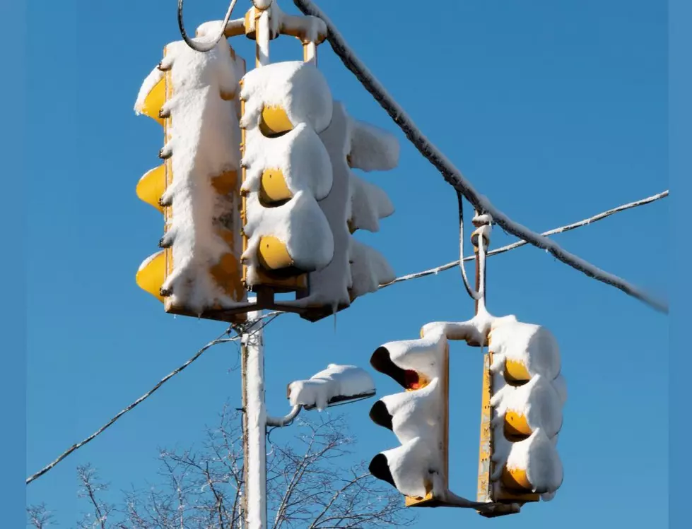

Three times a week on a good week; less on a regular one. I put on my running outfit before leaving home to drop the kids at school. Not because we are often late, but because I go for a run just after the drop off. I have to leave the house anyway, and I need to be dressed regardless. This is the minimum plan. The twist is that it comes with an audience: the kids and the other parents see me. It’s a habit cue on steroids. After being seen by all those people, I would feel like a complete loser if I didn’t run. So I run, just to be able to look myself in the mirror. Humiliation avoidance is a powerful tool1.
This reward—avoiding humiliation—kicks in the moment I start running. But the mirror has two layers: my genuine motivation to run is that I feel good for most of the day that follows. Runner’s high. I don’t care about the time of the run; I always cover the same distance. I don’t care whether I overtake someone or get overtaken. My true reward is delayed.
In biology, mobility means moving from one point to another and picking up food along the way. In great simplification, either you are a plant and can harness energy from the sun, or you are an animal and must move to find food2. Of course, biology is full of exceptions—just look at this beautiful example of kleptoplasty:
Costasiella kuroshimae is a sea slug that can photosynthesize by stealing chloroplasts from the algae it eats. Remarkable, isn’t it? Source: Wikipedia
{kind=link}
But back to the main thought: given that movement in biology is primarily to reach calory sources, my hedonistic running goal is hanging on the side effect.
Side effect is a pejorative. Adverse effect is often used as its synonym. But what if we look at side effects as a risk, that has two faces? And focus on the face that is yielding a positive outcome?
In the same year that the beautiful cabbage-shaped slug was discovered, Pfizer was finalizing a clinical trial. Have you ever heard of sildenafil? It was intended to treat angina, but it failed miserably. It seemed inevitable that the trial would be shut down, and that the company would have to book losses after financing eight years of ineffective drug development.
The final trial was conducted in Wales, in a region where a decade earlier mines had been closed en masse. It is easy to recruit for clinical trials in places with high unemployment and pharmaceutical companies are well aware of it: most participants were former miners. They were required to stay overnight at the clinic and the next morning to fill in the questionnaire about the turnout of the trial. It was a single participant3 that wrote in the “other remarks” box: “I had erection all night”. Within two weeks Pfizer changed its priorities: what had been an almost failed trial for a chest condition, it became its no.1 priority for the treatment of erectile disfunction. Five years later the pill was commercialized under the name Viagra.4
Serendipity holds an unmatched place in the history of scientific discovery. Sloppy Fleming and penicillin, smallpox vaccination and milkmaids or Pfizer and Viagra are some of the most known in the history of medicine. I can personally recall a few fortunate examples from my own time at the bench, that were accidental and yielded unexpectedly positive outcomes. Serendipity, often called luck, is for the prepared minds, however.
It makes me think: how many overlooked remarks might have resulted in missing treatments? Just because person in charge on the day of inspection e.g. did not sleep well. As a consequence, he failed to connect the dots or to notice the potential. The discovery of Viagra is an example of a desired and identified side effect. But what happens if you rely on a side effect without even knowing it exists? If you live in a region with heavy snowfall, it is likely your case.
One such hidden dependency used to sit above our roads, glowing red, amber, and green. Originally, the traffic lights were equipped with incandescent lights: the old-fashioned bulbs that need to heat up to operate. Have you ever burned your hand by touching a lamp with such bulb? Due to their high energy consumption, these lights have, in the recent years, been replaced with more energy efficient light emitting diodes: LEDs. The swap not only reduced energy bills, but unexpectedly safety on the roads too. In winter, the heat emitted by the lights - normally seen as waste - was melting snow and ice. As a result, the light remained visible to drivers. This is no longer the case with LEDs, and you can find records of the issue worldwide: Canadian Ontario, American Minnesota, Sweden or Japanese Sapporo5. Luckily there are remedies available, such as manual maintenance, hydrophobic coating and supporting LEDs with heat emitters. The question remains what happens to the total energy bill when these adaptations are in place.

Snow covered traffic lights in Iowa, USA. Source:k923.fm
{kind=link}
It was only recently that I realised the language of spam emails offers another example of a beneficial side effect, the effect noticed only once it is gone. My primary way of spotting spam messages used to be poor language6. Spelling was usually enough. If it was not, I could always fall back on punctuation. Dots and commas appeared to have been ordered from a Terry Pratchett character, William de Woorde.
William is an entrepreneurial writer in “The Truth”, a novel from the Discworld series. For a small fee, he writes letters to parents of migratory workers arriving at Ankh-Morpork. With the invention of the printing press he not only he scales his business, but also invents new ways to earn extra dimes7:
Fond dwarf parents all over the mountains treasured letters which looked something like this:
Dear <Mume & Dad/>,
Well, I arrived here all right and I am staying, at <109 Cockbill Street The Shades Ankh-Morpk/>. Everythyng is fine. I have got a goode job working for <Mr C.M.O.T. Dibbler, Merchant Venturer/> and will be makinge lots of money really soon now. I am rememberinge alle your gode advyce and am not drinkynge, in bars or mixsing with Trolls. Well thas about itte must goe now, looking forwade to seing you and <Emelia/> agane, your loving son,
<Tomas Brokenbrow/>
… who was usually swaying while he dictated it. It was twenty pence easily made, and as an additional service William carefully tailored the spelling to the client and allowed them to choose their own punctuation.
I do not know about the Discworld, but on planet Earth the trolls are sending better and better emails. Neither spelling nor punctuation raises my eyebrow anymore. To reach my primary goal, same as public servants in snowy regions, I need to invest more time, more effort and employ more creativity.
Is it good practice to rely on side effects? Before I started this post I thought “no”. After few honest hours of drafting, my answer has become “it depends”. It is definitely worthy to know when you rely on a side effect and when you rely on the main effect. The main effect is the primary goal. If a process to achieve that goal changes, satisfying the primary goal stays in focus, whereas the side effect might be lost. Consumers benefiting from competition is the side effect too. The moment a monopoly emerges perks such as free shipment, extended warranty or attractive pricing disappear. These benefits persist only because we regulate industries and enforce anti monopoly laws. As Homo sapiens, we have this unique propensity to modify the rules of the game. The same holds true for my running.
If my goal was to get to the ice-skating rink and back, I could have used a car. It would have taken way less time. But I have no purpose to run to this particular spot. My food is in the fridge and I neither hunt nor pluck anything along the way. My goal is the runner’s high. That is my main goal. Once I realize this, I immediately start seeing alternatives; mostly pharmacological ones. Yet these alternatives would be not so healthy for my brain and liver, organs that I value quite a bit. Also, I enjoy the fact that the run is outdoor. And I like the texture of the track, the beat my shoes produce, the freshness of the morning, the smell after rain, smiling people running the opposite direction. Actually, I enjoy the whole package. Then why is it so hard to do?!? Thank you for reading.
Footnotes
And James Clear can learn from me.↩︎
Sorry Bacteria, Archea and a few skipped eucaryonts: you will get a potst of your own one day.↩︎
Single man makes a powerful story, but when Pfizer back checked the left remarks, there were occasional records of the male enhancement. Apparently they were missed.↩︎
Not that my writing is flawless, but lets focus for now on the speck of sawdust in my brother’s eye.↩︎
Therry Pratchett, “The Truth”.↩︎